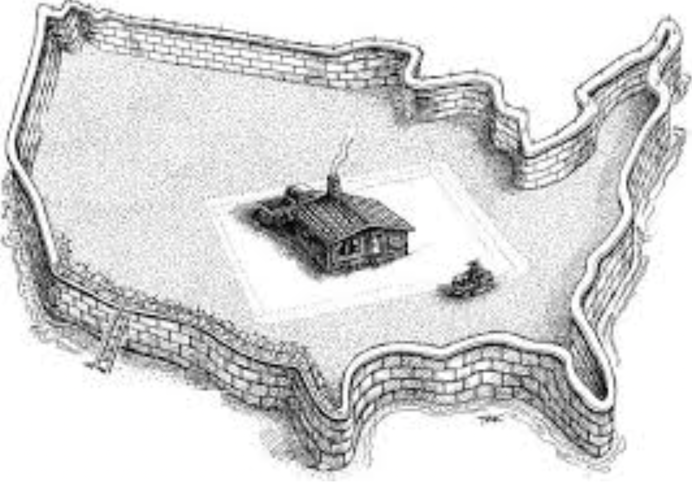
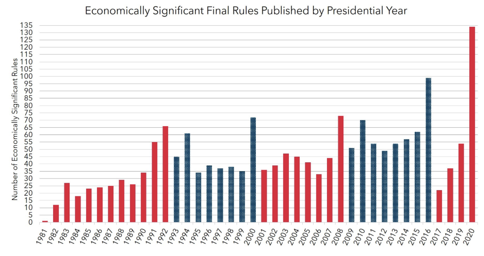

The American Economy
Basic Information
- GDP: $20.89 trillion (2020)
- Deficit: $2.77 trillion
- Debt to GDP: 126.69%
- Credit Rating: AAA
- Inflation rate: 6.8%
- Unemployment rate: 4.2%
- Government type: Constitutional Republic
History
The United States was built on the basis of a Constitutional republic and is one of the first democracies in the world. This was made clear when its presidents would willingly give up power by the end of their term. This created a sensible chain of transfers of power that has generally gone smoothly.
This kind of willingness and fairly quick transfer of power has given the United States stability throughout most of its history with only one civil war in its lifetime. They country also has a verry diverse and large set of terrain and environments with an abundance of natural resources.
Stability is one of the most important factors for economic growth as a nation at a state of perpetual instability and regime changes is not in a position for innovating and improving the lives of its people. Due to the previously mentioned reasons stability in the United States has been exceptional

The United States also has two large oceans surrounding the countury making it separated from the conflicts found in Europe giving them the peacetime that is needed to spark innovation and improvements in the civilian sector.
With the founding principles of a limited government this made the United States a hub of innovation and inventions with many of the world’s most famous inventions originating from the United States. Through their innovations and successes, they began to dominate the global market and even overtook the United Kingdom (their former colonial overlord) economically.
Recent History
In the 20th Century the United States took the economic theories of Jhon Maynard Keynes and applied it in their economy where they would print and spend their way out of recessions. Although they did not follow such theories perfectly as the United States did not live frugally during the economic booms and kept the printing and spending.
This led to the economic stagnation and inflation of the 1970’s also known as stagflation. Prices were going up but there was no economic growth that was usually coupled along with it. This led to a temporary shift in monetary policy to raise interest rates and keep the supply of money down. This reduced inflation and made the US economy begin to grow faster.
In later years the United States is beginning to make a return to Keynesian economic policy of spending their ways through recessions such as in the 2008 and 2020 economic crashes where through quantitative easing and pump priming, they have massively spent their way and this made a large rise in debt.
Current State
Today the United States is beginning to have a more mixed economy as they have raised regulation for business and are expanding government intervention in the economy. With the national debt growing. There is also a large inflation rate which is a result of two things which are the stagnant supply lines which cause a reduction in the supply of goods and a large rise in the amount of money in circulation which means that more money is chasing fewer good and results in a rise in the price of that good.

The United States is also facing increasing polarization since the start of the pandemic seen in the BLM riots of 2020 and the storming of the capitol building in 2021. This creates instability which also hurts economic growth and with the United States still in lockdown this will keep its economy stagnant.
Cronyism in the government is also a prevalent issue as companies are bribing government officials to raise regulation as to keep their competition and small businesses down. There are also many unfair regulations that have been set in place such as a certificate of needs where you would practically ask your competition if there is a need for them. These kinds of regulations hurt economic growth in exchange for a seance of safety and comfort.
Analysis
The American economy is large and is extremely capable with many people willing to innovate and help with their own part in the economy. This kind of enthusiasm coupled with the stability of American democracy and its isolationism from European conflicts has created the environment needed for it to rise to its superpower status today.
Stating that the United States has no weaknesses would be incorrect though as the nation has many rules and regulations that have been constantly on the rise. The country is also facing rising polarization, a growing deficit, and rising inflation that has weakened the nation.
Currently with the actions that are taken by the current administration in the United States is fairly subpar and a change in the ideas that should be used for improving the economy that will be covered in what would be in my own opinion possible solutions to such issues.
Possible solutions
The main problems in the American economy are instability, budget deficits, inflation, and overregulation of the economy. These issues can be combated in the following ways:
Instability
Through a temporary increase in funding for departments such as the police and national security that will be time bound to end in a few years this will create stability in a nation. This may be criticized as authoritarian although authoritarian states tend to be a lot more stable than democracies.
Budget deficit
Budget deficits can be analyzed to understand what is causing them and combating them accordingly. We find that the largest parts of the budget are social security, Medicare, and Medicaid which make up about 1/3 of the budget. Although these parts of the budget are mandatory, they can be changed to cost less.
Social Security
Such as raising the retirement age and cutting benefits to the wealthy. This is because when social security was initially created the life expectancy was below retirement age. As a result, keeping that kind of thinking would mean that we raise the retirement age above life expectancy. Making social security more privatized will also mean that the money from the social security will be put to better use because when individuals can control their own money, they would spend it invest it making that money turn to more money and growing the economy as a whole.
Medicare and Medicaid
Through privatizing the medical system further and cutting spending from these programs we can begin to see cuts to the budget and a reduction in the deficit. This is because the American healthcare system is far from a free-market system and if cronies would be removed from the government reforms would be made easier.
Through deregulation and price transparency the cost of healthcare would drop making it more affordable. This can be seen in the direct primary care system in the United States or some of the less regulated sectors of the healthcare industry. In these systems costs for healthcare are much smaller than compared to the more regulated sectors as the more regulated sectors don’t have to compete as much because competition is destroyed by the regulations.
Making a more free market healthcare system would make the system a lot more affordable for everyone and also reduce costs for the government which is reducing the deficit.
Inflation
We can look back to monetarism and how the United States has reduced inflation from previous years to be able to combat inflation now. Inflation currently is a result of a large amount of money in supply and a lack of goods due to supply chain shortages. Through opening up the economy and making more ports this will make the supply chain issue less of a problem. Monetarism and raising interest’s rates can also fight inflation and lower it.
Overregulated Economy
The economy can be deregulated and made more free along with a destruction of many government departments in an effort to make the market freer and the economy begin to boom much faster from the pandemic.
Summary
The American economy is massive with high standards of living and with a mostly free market system that was set by the ideals of the founding fathers of the nation. Through such ideas of liberty and freedom the nation was able to create vast number of opportunities and wealth for its people.
Through isolationism it was able to avoid the mess found in the many conflicts in Europe as the nation established a stable democracy where presidents would voluntarily resign their powers when it is the time to do so.
The nation currently has many issues though that have stemmed from an increasingly polarizing climate and an economy that has been more and more regulated over the years. Such regulation that is unneeded. The nation is also seeing a rising deficit and a high inflation rate that needs to be combated.